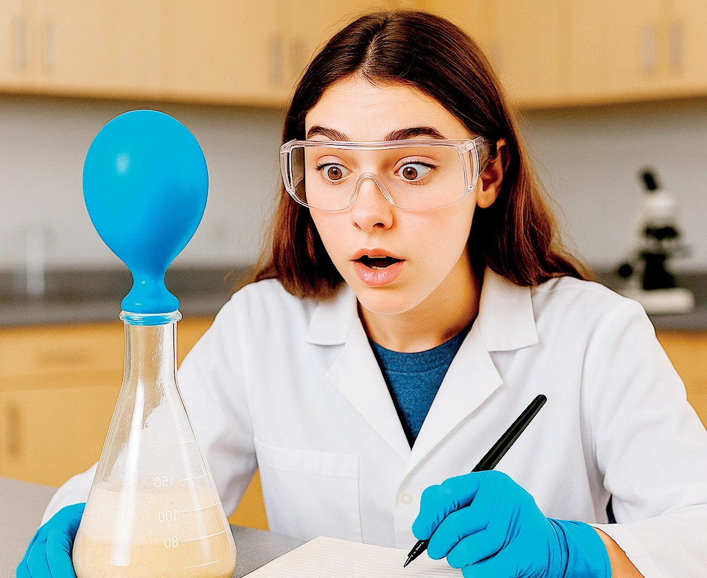

Salud
y bienestar
Observar, a través de la experimentación, el metabolismo de la levadura. Se analizará cómo este organismo
eucariota simple metaboliza los azúcares y cómo su actividad se ve influenciada por la disponibilidad de
sustrato, lo que fomenta el desarrollo de la competencia científico-técnica.
Una práctica experimental es una actividad de investigación científica
diseñada para probar una hipótesis o demostrar un fenómeno mediante la manipulación controlada de
variables. Se utiliza principalmente en el ámbito científico y educativo. Su propósito es observar y medir
los resultados de estas manipulaciones, lo que permite a los estudiantes o investigadores verificar teorías,
comprender principios fundamentales y desarrollar habilidades de pensamiento crítico y análisis de datos.
- 20 g de levadura de panadero seca
- 20 g de glucosa (azúcar común)
- 40 ml de agua tibia
- Globos pequeños
- 4 matraces Erlenmeyer
- Cronómetro
- Cinta métrica
- Equipo de protección personal (mandil, guantes quirúrgicos, gafas)
- Formen grupos de trabajo y reúnan los materiales solicitados.
-
Ingresen al siguiente enlace https://cal.lat/p/6R2rG9 o escaneen el
código QR y observen cómo se realiza la visualización de las levaduras en el microscopio.
-

Disuelvan 5 g de levadura en 10 ml de agua tibia en cada matraz Erlenmeyer.
- En cada matraz, añadan diferentes concentraciones de glucosa (ej. 0 g, 1 g, 5 g, 10 g).
- Coloquen un globo desinflado en la boca de cada matraz. El dióxido de carbono producido por la
fermentación (metabolismo) inflará el globo.
- Midan el diámetro de los globos con la cinta métrica a intervalos de tiempo (ej., entre 15 y 30
minutos durante 1 a 2 horas).
- Discutan cómo la levadura metaboliza la glucosa para producir energía y CO2.
Relacionen la cantidad de glucosa con la tasa de producción de CO2, y cómo la levadura
"ajusta" su metabolismo en respuesta a la disponibilidad de alimento, buscando un equilibrio en su
actividad.
-
Completen su informe de la práctica ingresando al siguiente enlace https://cal.lat/p/Ai5We8 o escaneen el código QR.
Evalúa tu trabajo según los criterios y completa la tabla.